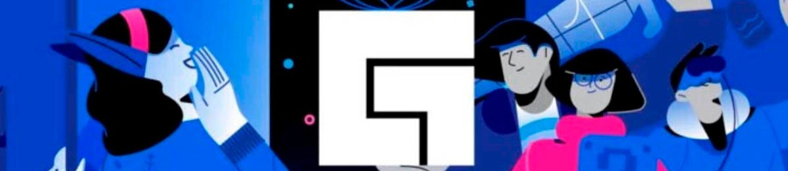
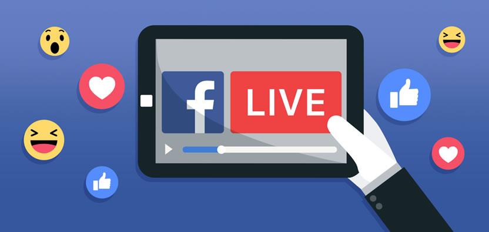

Facebook lanzó su plataforma independiente de streaming de juegos en 2018, plantando cara a Twitch y YouTube. Sin embargo, ha tenido un largo período experimental sufriendo varios cambios en el camino. Pero ahora parece que Facebook ya tiene clara su estrategia.
Para todos aquellos que no lo sepan, Facebook Live (ahora conocido como Facebook gaming) es la herramienta de reproducción de vídeo en tiempo real que pone a disposición de todos sus usuarios la propia plataforma de Facebook.Como dato curioso diremos que desde la propia web de Facebook, podemos ver cómo las retransmisiones en directo han ido creciendo un 400%, desde que se lanzó en 2016.
¿Qué ofrece como plataforma de streaming de videojuegos? Puedes ser un simple observador viendo las transmisiones de los juegos que te gustan, o mostrar tus habilidades de streamer. La idea es que cualquier usuario pueda iniciar una transmisión sin complicarse instalando ningún software ni app externa. Unos simples clics y ya estarás en vivo.